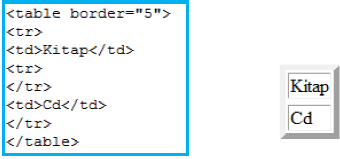

|
4.TABLOLAR 4.1.< TABLE > Hazırlamış olduğunuz web sayfanıza tablo eklemek için kullanılan etikettir. Bir tablo < Table > etiketi ile başlayıp < /Table > etiketi ile biter. Tablolar satır ve sütunlardan oluşur. Satırların ve sütunların kesiştikleri kutuya “hücre” adı verilir. Aşağıdaki örnekte 1x1’lik (1 satır ve 1 sütundan oluşan) bir tablo gösterilmiştir.
4.1.1.TR Tabloda satır oluşturmak için kullanılır. Örnek 1:4.1.2.TD Tabloda sütun oluşturmak için kullanılır. Örnek:4.1.3.BORDER Border parametresi, hücrenin ve tablonun etrafındaki çerçevenin kalınlığını ayarlamak için kullanılır. Border=0 olduğu zaman çerçeve tarayıcıda görünmez. Web sayfası hazırlama sürecinde bu seçenek sıklıkla kullanılmaktadır. Örnek: 4.1.4.BGCOLOR Tablonun veya istediğimiz hücre veya hücrelerin arka plân rengini değiştirmek için kullanılır. Örnek:4.1.5.BACKGROUND Tablonun veya istenilen hücrenin arka plânına resim eklemek için kullanılır. Örnek:
4.1.6.WİDTH Tablonun veya hücrenin pixel cinsinden genişliğini belirlemek için kullanılır. < table width=”200” > Tablo genişliğini belirlemek için kullanılır. < td width=”200” > Hücre genişliğini belirlemek için kullanılır. 4.1.7.HEIGHT Tablonun pixel cinsinden yüksekliğini belirlemek için kullanılır. < table height=”200” > Tablo genişliğini belirlemek için kullanılır. < td height=”200” > Hücre genişliğini belirlemek için kullanılır. Örnek: 
4.1.8.COLSPAN Colspan, aynı satırdaki hücreleri birleştirmek için kullanılır. Örnek:4.1.9.ROWSPAN Rowspan, aynı sütundaki hücreleri birleştirmek için kullanılır. Örnek:
4.1.10.CELLSPACING Tablonun içerisindeki hücrelerin, birbirlerinden ve tablo sınırlarından uzaklığını pixel türünden ayarlamak için kullanılır. Örnek:
4.1.11.CELLPADDING Hücrelerin içindeki verilerin, hücre sınırlarından uzaklığının ne kadar olacağını belirlemek için kullanılır. Örnek:
|